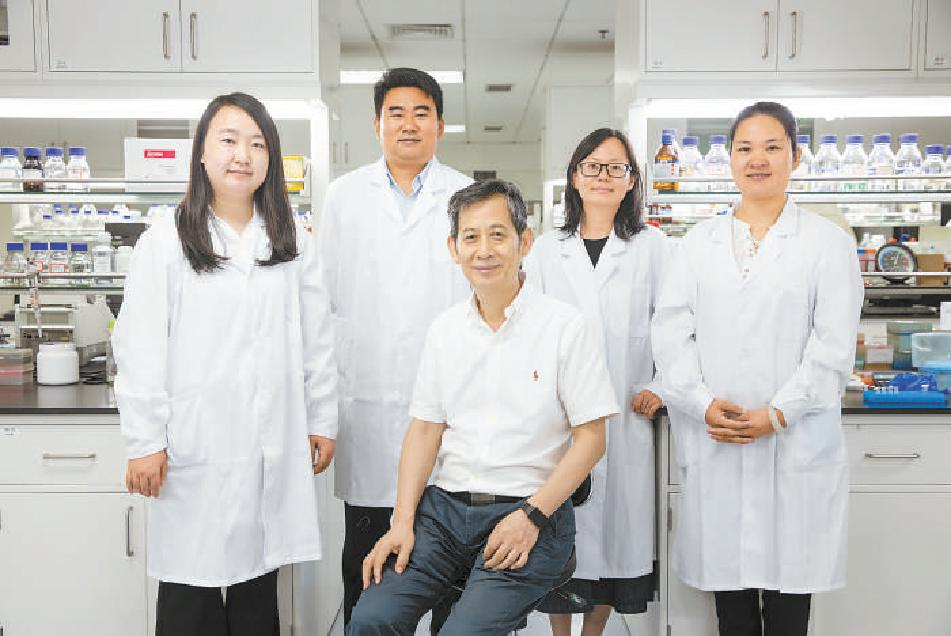

<!--  -->

{% include feature_row id="intro" type="center" %}

<h2>Faculty</h2>

{% include feature_row id="leader_row" type="left" %}

<h2>Current Members</h2>

{% include feature_row id="student_row_1" %}